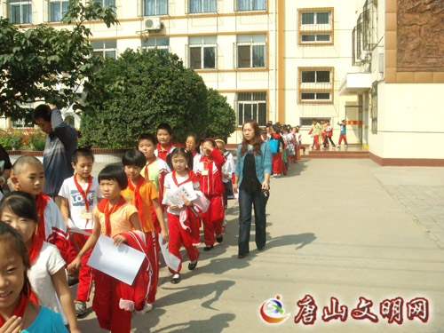
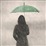

欢迎登录唐山教育网!
首页
丨
新闻快递
丨
学院简介
丨
市民学堂
丨
培训项目
丨
社区家园
丨
学分银行
丨
政策理论
丨
走进唐山
帮助
登录
唐山教育网
搜索
社区/街道
会员
家园首页
社区/街道首页
社区/街道风采
社区街道 (7)
居民(8)
活动(3)
风采( (2)
路北区
文化路街道
钓鱼台街道
乔屯街道
缸窑街道
河北路街道
张各庄社区
乔屯街道
社区活动
沁园春社区中秋送温暖
时间：
15年05月1日 周五 08:00 - 15年07月1日 周三 18:00
地点：
河北省,唐山市
路北区,钓鱼台街道
发起人：
dyt
2676次浏览
1人参加
0人关注
1张照片
0条留言
钓鱼台-看望孤老人活动
时间：
15年04月10日 周五 08:00 - 15年10月1日 周四 18:00
地点：
河北省,唐山市
路北区,钓鱼台街道
发起人：
dyt
2319次浏览
1人参加
0人关注
1张照片
0条留言
推动全民健身活动的广泛开展
时间：
12年10月20日 周六 08:00 - 12年10月31日 周三 18:00
地点：
河北省,唐山市
路北区,河北路街道
发起人：
hbl
2389次浏览
1人参加
0人关注
1张照片
0条留言
社区风采

钓鱼台一小整顿中队
钓鱼台街道开展社区
活跃居民
最新加入
李磊
文化路街道
乔屯街道管理员
乔屯街道
钓鱼台
钓鱼台街道

宝宝
张各庄社区
hbl
河北路街道
gy
缸窑街道
qt
乔屯街道
whl
文化路街道
李磊
文化路街道
乔屯街道管理员
乔屯街道
宝宝
张各庄社区
hbl
河北路街道
gy
缸窑街道
qt
乔屯街道
钓鱼台
钓鱼台街道
whl
文化路街道
居民学习排行
排名
名称
学分